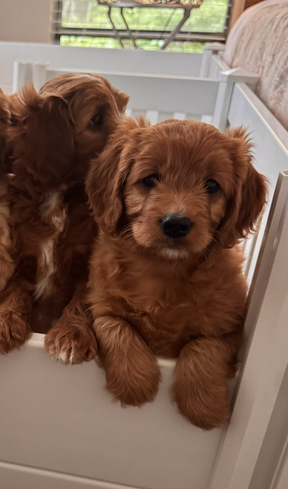

We buy, raise, train, then place the puppy.
Crowned K9s selects a puppy first, starts the training and raising process, then matches that puppy with the right approved home.
Crowned K9s Presents
Premium Puppy Placement + Find My Puppy
Meet a puppy already in our care through Premium Puppy Placement, or hire Crowned K9s to source and raise one privately for your family through Find My Puppy.
Either way, the goal is the same: a thoughtfully selected puppy, early structure, real training, and a calmer transition into your home.
Two Paths, One Standard
Crowned K9s selects a puppy first, starts the training and raising process, then matches that puppy with the right approved home.
Available now: Zoey the Cavapoo. Placement options are $6,000-$7,000.
Your family hires Crowned K9s as your puppy agent. I source, select, pick up, raise, train, and prepare a puppy specifically for your home.
Typical range: $4,000-$8,000 depending on breed, sourcing, travel, training scope, and timeline.
Why It Works
Breeders are screened for health, transparency, parent quality, early care, and communication before your family commits.
Marley's year-long service dog prospect development plan starts at $10,000. That is not the standard Find My Puppy placement fee.
The puppy is selected around your household, schedule, goals, energy level, and long-term lifestyle.
Commands, routines, crate habits, potty structure, and household manners are introduced before go-home.
Logistics, records, vet care, training updates, and go-home support stay organized through one accountable expert.
What It Comes With
Success Stories
Charlie came through Find My Puppy. Koda, Kobe, Sky, and the rest of our placed puppies show the same placement standard in action.
 Charlie
Charlie Koda
Koda Sky
Sky Kobe
Kobe Miley
Miley Rocko
Rocko Mozzie
Mozzie Maple
Maple Brutus
Brutus Charlie
Charlie Kai
Kai Gwen
Gwen Pawly
Pawly Wynter
Wynter Puma
Puma Nyla
NylaModel In Action

Cavapoo • Female • Born March 12, 2026 •
Zoey is not a random puppy listing. She is a Crowned K9s PPP puppy: already selected, already on a training-first path, and waiting for the right family fit.
Placement options: $6,000 with follow-up sessions or $7,000 with a future 1-week board and train.
Advanced pathway note: Marley shows the separate year-long service dog prospect development path. That plan starts at $10,000 and is not the standard Find My Puppy fee.
Crowned K9s
Premium Puppy Placement and Find My Puppy are connected, but they are not the same service. PPP is for available Crowned K9s puppies like Zoey. Find My Puppy is private sourcing and training for one specific family.
Ready to learn more?
crownedk9s.com | @crownedk9s
Free Resource
Get the framework smart families use before choosing a puppy, so sourcing, temperament, training, and transition are handled with a plan.
Written from the same training system used in Crowned K9s Academy, PPP, and Find My Puppy.
PPP FAQ
Crowned K9s buys the puppy first, starts raising and training her, then places her with the right approved home. Zoey is the current available PPP puppy.
Find My Puppy is private and client-specific. Your family hires Crowned K9s first, then I source, select, raise, and train a puppy for your home.
Most Find My Puppy placements typically run $4,000-$8,000 depending on breed, sourcing, travel, training scope, and timeline.
That is the separate year-long service dog prospect development pathway, like Marley. It is not the standard Find My Puppy placement fee.
Health, parent information, breeder transparency, temperament, vet care, and genetic testing are part of the selection and development process. You get clear updates before go-home.
No pressure. Crowned K9s can still help through training programs for dogs you already have, including Private Sessions, Transformation, and Academy.